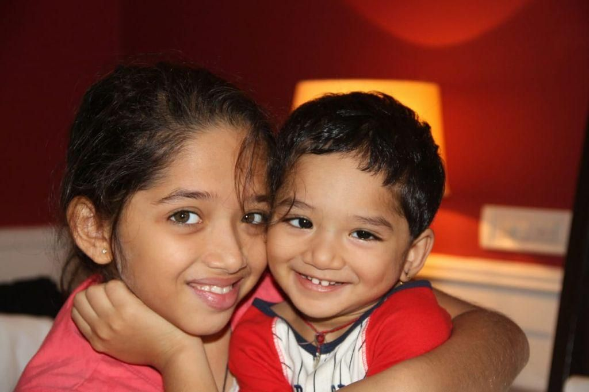
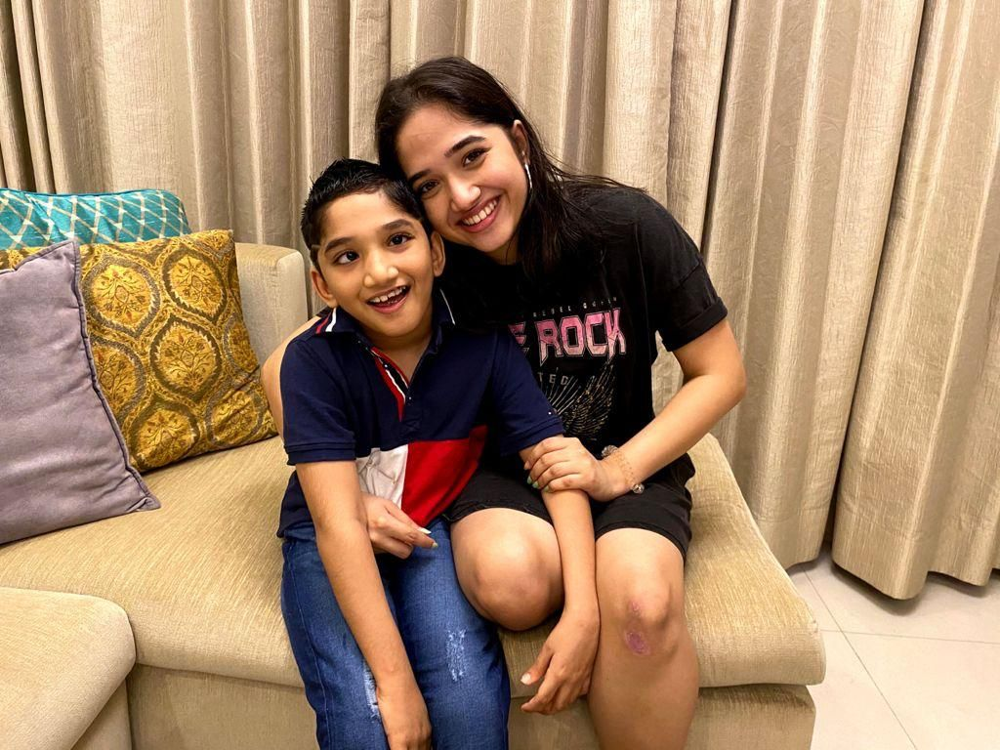
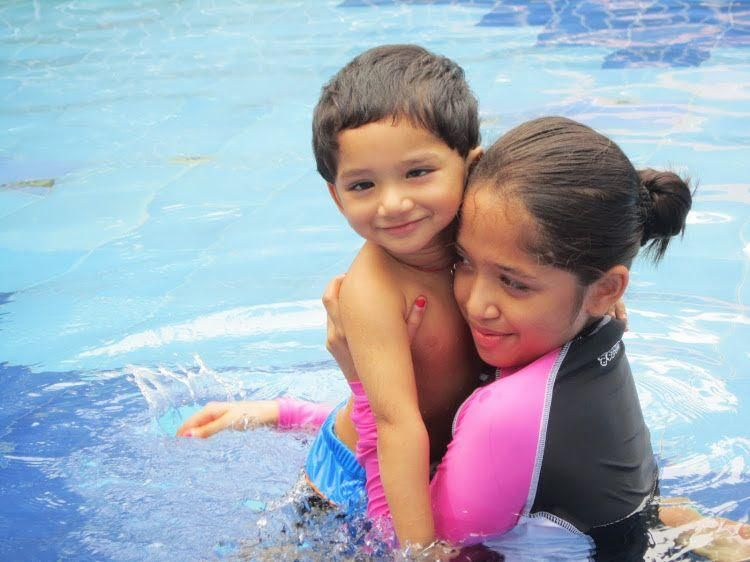
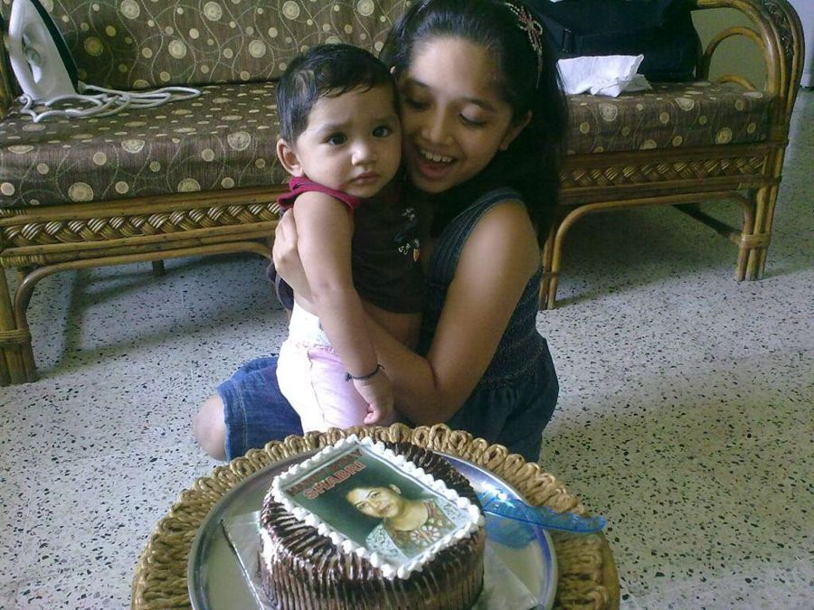
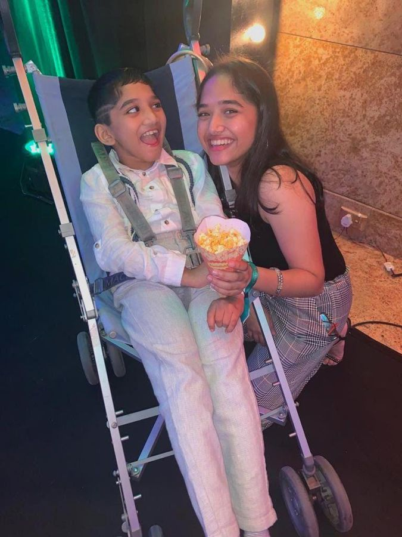
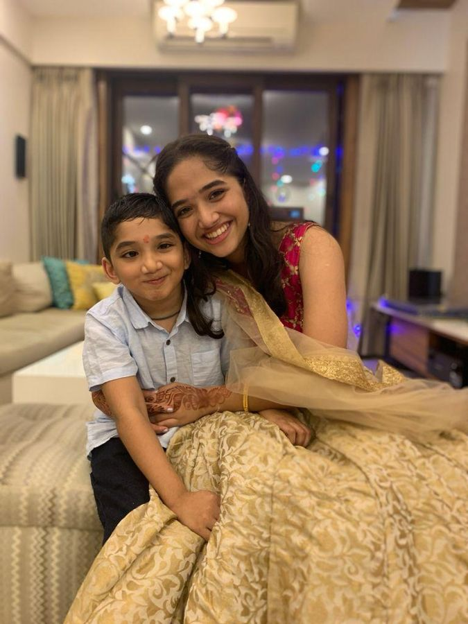
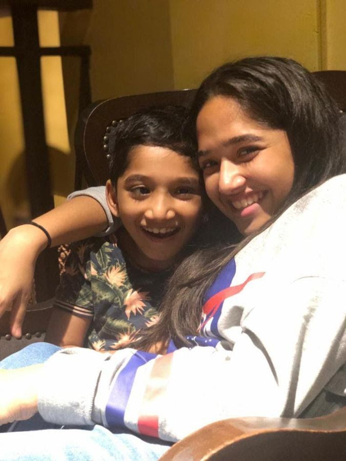

It started with my brother, Aadi
When Aadi was diagnosed with cerebral palsy, my family couldn’t find clear information written for Indian families. We pieced it together ourselves. This site is what we wished we’d had.
दिखें, सुने जाएँ, गिने जाएँ।
Plain-language guides to every disability the law recognises, your rights and schemes, the latest court rulings, ideas worth bringing home, and petitions you can sign today.
If someone is having a seizure for more than 5 minutes, call 112. Turn them on their side and don’t put anything in their mouth.

When Aadi was diagnosed with cerebral palsy, my family couldn’t find clear information written for Indian families. We pieced it together ourselves. This site is what we wished we’d had.
Under the Rights of Persons with Disabilities (RPwD) Act, 2016, a person with disability has a long-term physical, mental, intellectual or sensory impairment that, together with barriers around them, stops them from taking part in society on an equal basis with others.
The key idea is the second half. Stairs without a ramp, a website a screen reader can’t read, a classroom without sign language: the barrier is often the bigger problem.
A benchmark disability is 40% or more of a specified disability, certified by a government medical authority. It unlocks reservations in jobs and education, and many schemes.
Information only, not medical advice. Please see a doctor or therapist for diagnosis and treatment.
Stigma in India often rests on a few old beliefs. Here is what’s true.
When in doubt, ask the person what they prefer.
| Avoid | Say instead | Why |
|---|
When my brother was diagnosed, we pieced this together over months. Here it is in one place.
Groups where parents, disabled people and carers share what worked for them. Join one for your disability, ask questions, and meet people who’ve been where you are.
14416 Tele-MANAS, free and confidential mental health support in Indian languages, 24×7. Also 1-800-891-4416.
Caring for someone is hard. This line is for carers too.
| Group | For | Who it’s for | Where it meets |
|---|
Every group was checked in October 2026 to make sure it still exists and is active. Run a support group, or know one we should list? Tell me and I’ll add it.
Each item links to the original report.
Pick an idea to see the evidence, where India stands today, and a step-by-step plan to bring it here.
Each petition has a specific ask, the evidence behind it, a plan, and the office we will deliver it to.
No law in India sets a number of signatures that forces Parliament, a ministry or a court to act. Signatures show public support, and these are the routes that support can travel:
When a petition reaches its milestone, we deliver it with the signer count and a state-wise breakdown to the office named on it, and post the response here.
These organisations support disabled people and their families every day. Your donation goes straight to them.
When my younger brother Aadi was diagnosed with cerebral palsy, it was hard for my family to work out how to support him. There were hardly any complete resources written for Indian families, so we had to put the information together ourselves. It was slow and tiring.
I also heard a lot of uninformed comments when I was out in public with him. More than angry, they made me sad, because they came from a lack of awareness.
In 2021, when I was 17, I designed and coded the first version of this site from Mumbai. Aadi is still the reason I do this.
I want this to be the place a family can open on the day of a diagnosis, and the place where people across India can push, together, for the laws and services disabled people are owed.
If you’re a parent, a disabled person, a teacher, a lawyer, a journalist or someone who wants to help, I’d love to hear from you.






Messages come straight to me. I read every one.